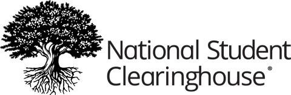
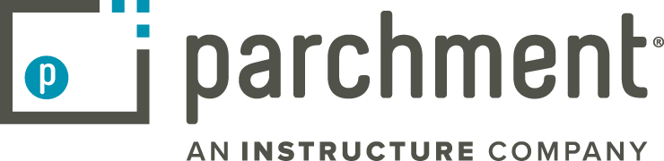
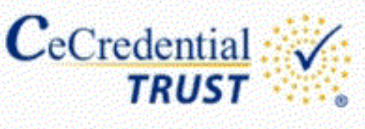
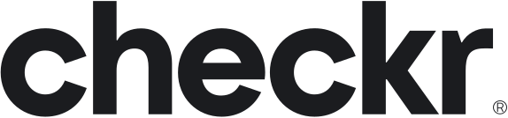
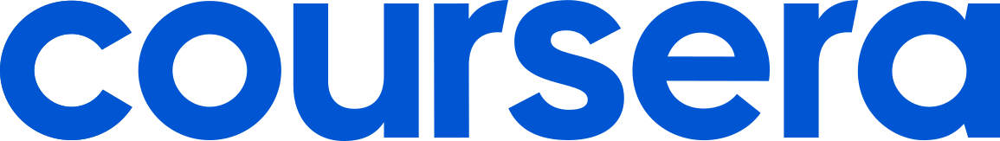

Transnode AI
San Diego, CA Jul 2026 – PresentCTO & Co-Founder — AuthenlyUSA
- Shipping full-stack features on AuthenlyUSA, Transnode’s AI credential & identity verification product for hiring and compliance workflows.
- Built admin review tooling: rejection notes, secondary staff review, document sorting/filters, and expiry-reminder flows used in live verification operations.
- Improved candidate subscription & billing UX — cancel-at-period-end, expiry reset, pricing/CTA consistency — across React/TypeScript surfaces on a production SaaS codebase.
Partners & programs
NSF I-CORPS™
 IBM Startup Partner Plus
IBM Startup Partner Plus
 Notion for Startups
Notion for Startups
 Atlassian for Startups
Atlassian for Startups
 Apple Small Business Program
Apple Small Business Program
UC Launch Accelerator
 Google for Startups Cloud
Google for Startups Cloud
BBB Accredited Business
AuthenlyUSA trusted network
LinkedIn
indeed
glassdoor
ZipRecruiter
UC San Diego

National Student Clearinghouse
Parchment
CeCredential Trust
Checkr
Coursera
Regula